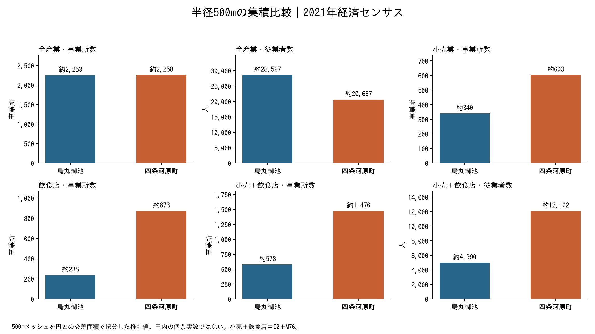
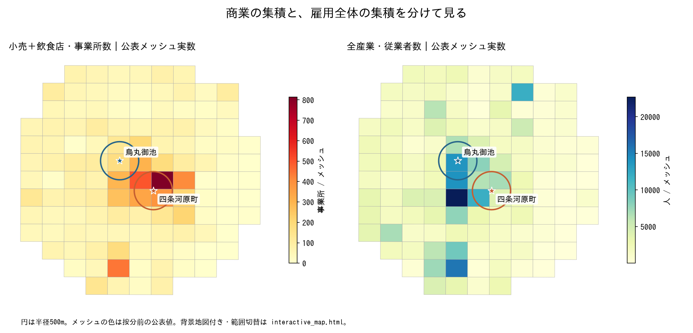
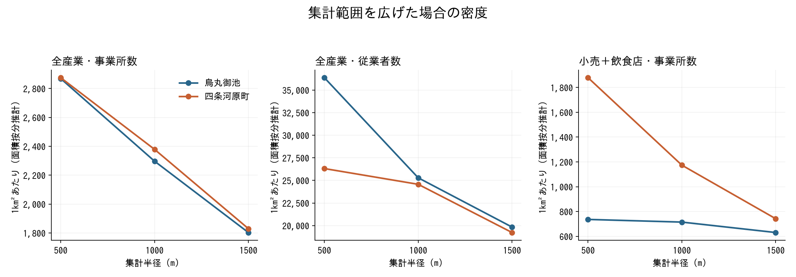
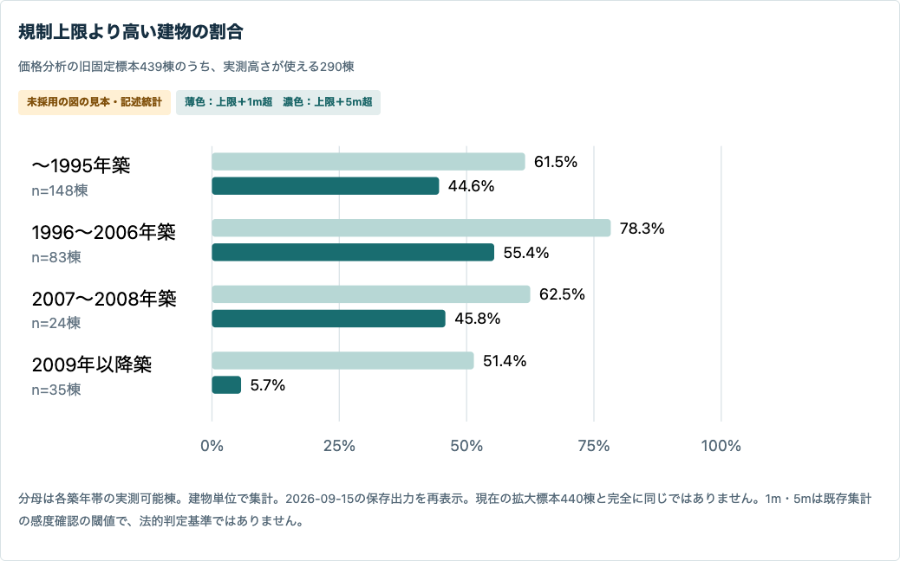
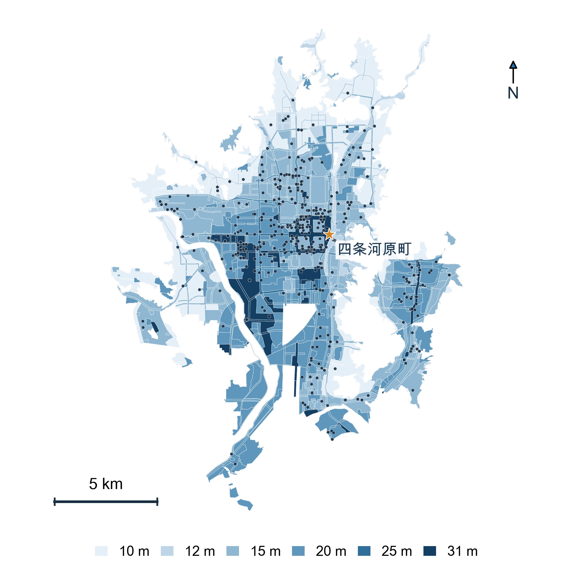
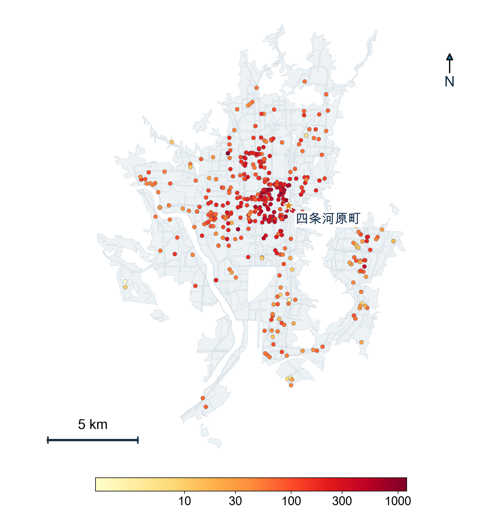
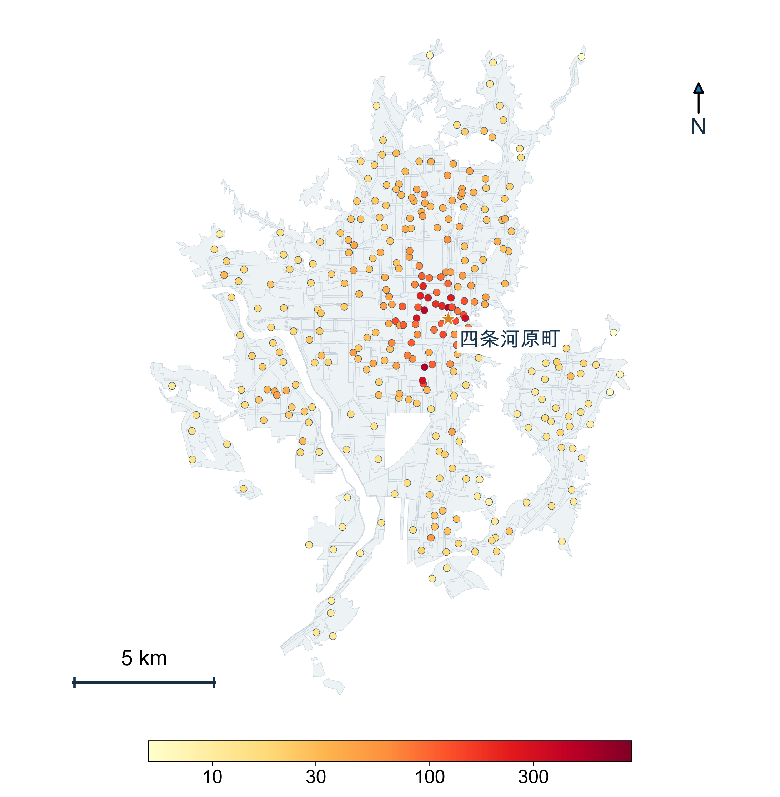
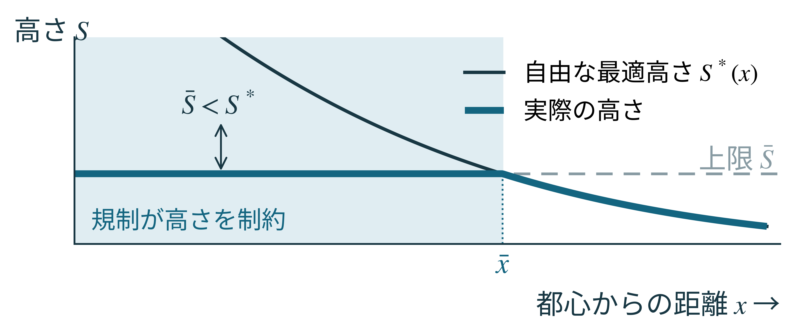
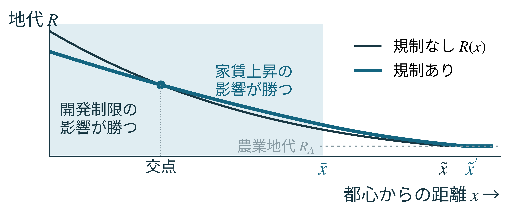

第35回 GIS学会 · 2026-11-01 · P2-11
GISA P2-11 iPad 地図ポータル
京都市の高さ規制・不動産価格・CBD の根拠を、地図と既存の図で確認できます。
3D 都市モデル（ArcGIS Web シーン）
建物の立体と高さの様子を 3D で見る外部ページ（ArcGIS Online）。
CBD を四条河原町にした根拠
半径500m内の比較。500mメッシュ内の密度を一定と仮定した面積按分推計で、円内の実数ではありません。
| 指標 | 四条河原町 | 烏丸御池 | 四条河原町／烏丸御池 |
|---|---|---|---|
| 全産業・事業所数 | 2258.21 | 2253.32 | 1 |
| 全産業・従業者数 | 20666.7 | 28567.2 | 0.72 |
| 小売業・事業所数 | 603.15 | 340.06 | 1.77 |
| 飲食店・事業所数 | 872.63 | 238.24 | 3.66 |
| 小売＋飲食店・事業所数 | 1475.78 | 578.3 | 2.55 |
| 小売＋飲食店・従業者数 | 12102.3 | 4990.12 | 2.43 |
- 小売・飲食店の商業集積の根拠です。全産業従業者数による雇用中心とは区別します。
- 事前に指定した2候補の比較であり、全市の最大地点を探索した結果ではありません。
- 2021年6月1日時点の断面です。規制導入前の中心性や因果効果を直接示しません。
- Matsui・Fukushige（2012）は河原町駅を基準としています。



既存不適格（実際の高さが上限を超える建物）
価格分析の旧標本 439 棟のうち、PLATEAU で実高を測れた 290 棟を建築年代別に集計。規制導入（2007年）前に建った棟ほど上限を大きく超えており（〜1995年築 148 棟：上限＋5 m 超 44.6%、1996〜2006年築 83 棟：55.4%）、規制後の 2009 年以降築 35 棟では＋1 m 超 51.4%・＋5 m 超 5.7% にとどまる。
注意：屋上の塔屋・設備や高さの測り方の定義差を含むため、超過の全てが違反や既存不適格を意味しない。1 m・5 m は感度確認の閾値で法的判定基準ではない。現在の推定標本 440 棟とは標本が一致しない（2026-09-15 の保存出力）。

ポスター図の拡大用




